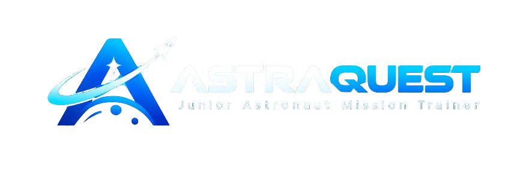

Our Solar System
The Sun is at the center of our planetary system. Eight planets orbit it, alongside dwarf planets, moons, asteroids, comets, and smaller bodies.

ASTRAQUEST LEARNING MODULE
Build a foundation in astronomy by exploring planets, moons, gravity, orbits, stars, and the scale of our Solar System.
Start ExploringMISSION BRIEFING
Explore the core ideas, understand why they matter, and connect science concepts to real space missions.
EXPLORE THE SCIENCE
Start with these concepts, then continue to the linked NASA resources.
The Sun is at the center of our planetary system. Eight planets orbit it, alongside dwarf planets, moons, asteroids, comets, and smaller bodies.
Gravity attracts objects with mass. An orbit is a continuous fall around another object: a spacecraft moves forward while gravity continually curves its path.
Space is vast, so astronomers use different units to describe distance. Because light takes time to travel, looking at distant objects also means observing them as they were in the past.
GO DEEPER
Continue learning from NASA’s public science and mission resources. ASTRAQUEST is an independent educational interface and is not an official NASA website.